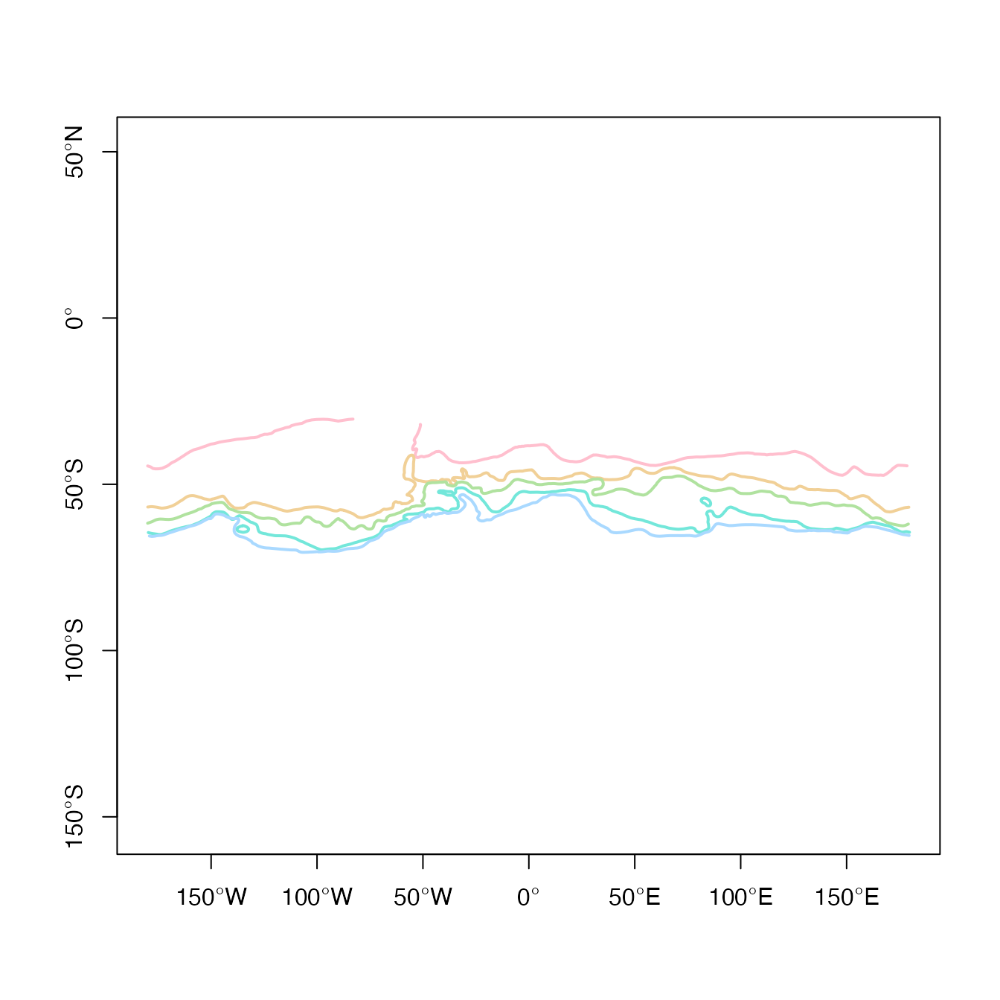
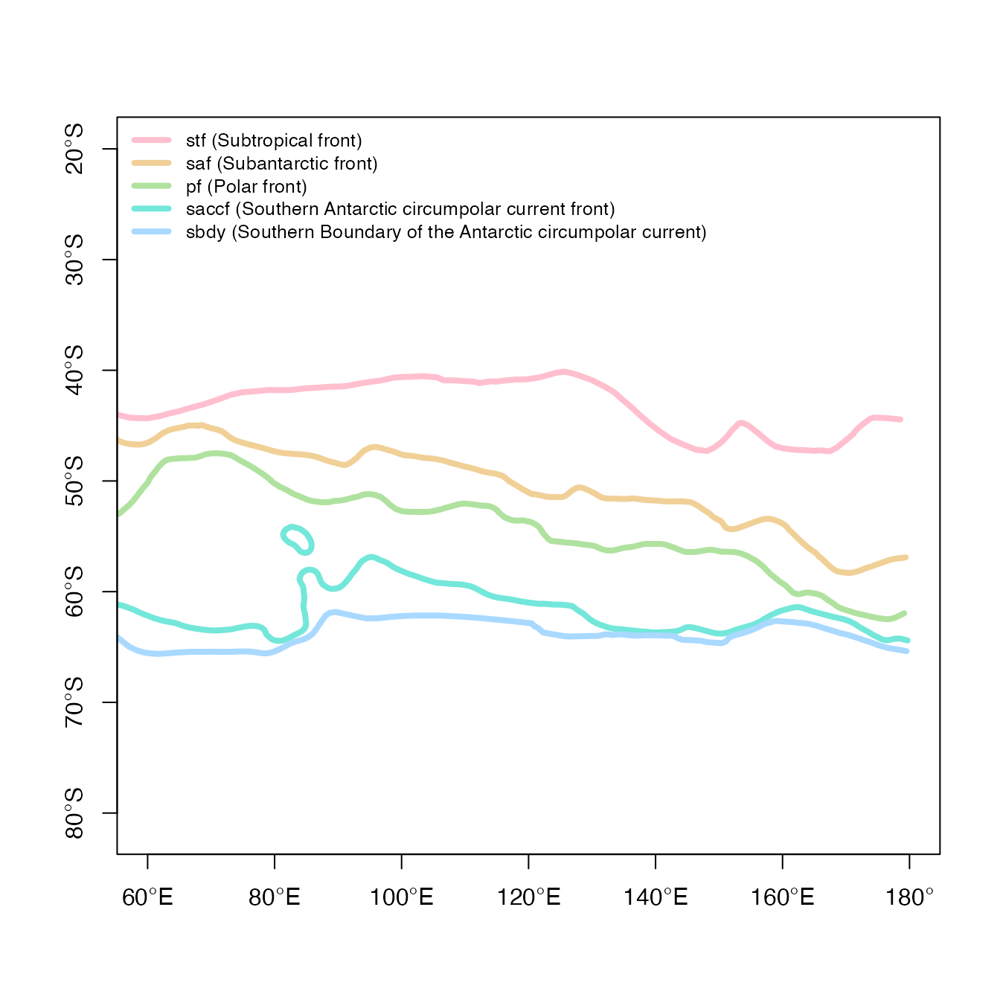
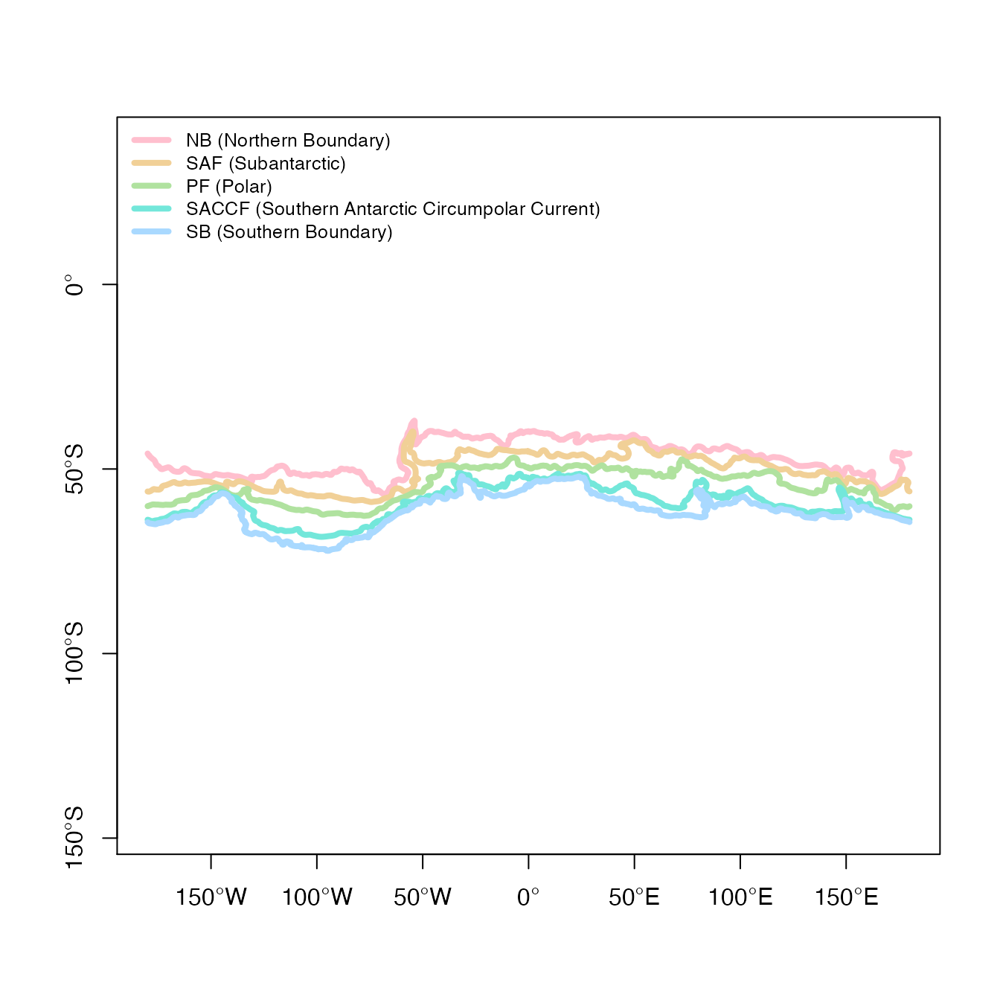

vignettes/orsifronts.Rmd
orsifronts.RmdThe “Orsi fronts” are a commonly used climatological map of Southern Ocean frontal distributions, published on the Southern Ocean Atlas Database Page after Orsi et al. (1995).
The data is provided in this package as a built-in data set. The object orsifronts is a ‘SpatialLinesDataFrame’ object, as defined in the ‘sp’ package. (A ‘SpatialLinesDataFrame’ is a “GIS vector” layer where complex line geometry objects are linked to simple attribute data in a table form, and it behaves like a ‘data.frame’).
library(orsifronts)
#> Loading required package: sp
cols <- hcl(seq(0, 240, length = nrow(orsifronts)), c = 50)
plot(orsifronts, col = cols, lwd = 2)
degAxis(1)
degAxis(2)
box()
There are 5 line objects, with some simple names and codes.
as.data.frame(orsifronts)
#> name front
#> stf Subtropical front stf
#> saf Subantarctic front saf
#> pf Polar front pf
#> saccf Southern Antarctic circumpolar current front saccf
#> sbdy Southern Boundary of the Antarctic circumpolar current sbdy
plot(orsifronts, xlim = c(60, 180), col = cols, asp = 1/cos(55 * pi / 180), lwd = 4)
legend("topleft", sprintf("%s (%s)", orsifronts$front, orsifronts$name),
col = cols, lwd = 4, cex = 0.8, bty = "n")
degAxis(1)
degAxis(2)
box()
Similarly for the more recent Park/Durand fronts derived from altimetry remote sensing.
as.data.frame(parkfronts)
#> name front
#> 1 Northern Boundary NB
#> 2 Subantarctic SAF
#> 3 Polar PF
#> 4 Southern Antarctic Circumpolar Current SACCF
#> 5 Southern Boundary SB
pcols <- hcl(seq(0, 240, length = nrow(parkfronts)), c = 50)
plot(parkfronts,col = pcols, asp = 1/cos(55 * pi / 180), lwd = 4)
legend("topleft", sprintf("%s (%s)", parkfronts$front, parkfronts$name),
col = cols, lwd = 4, cex = 0.8, bty = "n")
degAxis(1)
degAxis(2)
box()